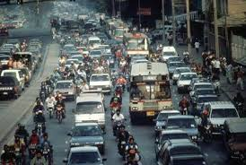
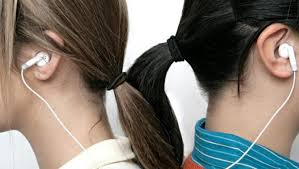

No Brasil, a falta de respeito e o uso inadequado dos equipamentos de som, seja em residências, casa de shows, carros, áreas públicas, é a causa de desentendimentos entre vizinhos, que tornam-se agressivos por perderem seu direito a privacidade, resultando muitas vezes em morte.
No site da ABEMA (Associação Brasileira de Entidades Estaduais de Meio Ambiente) basta escolher no mapa o estado para conhecer os órgãos responsáveis pela fiscalização da poluição.
|  |  | |
|---|---|---|